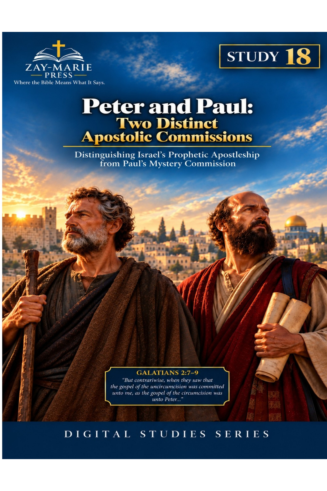
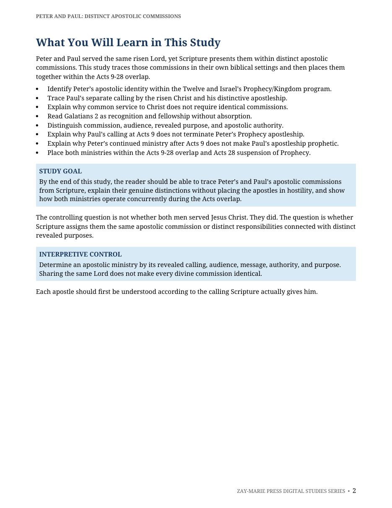
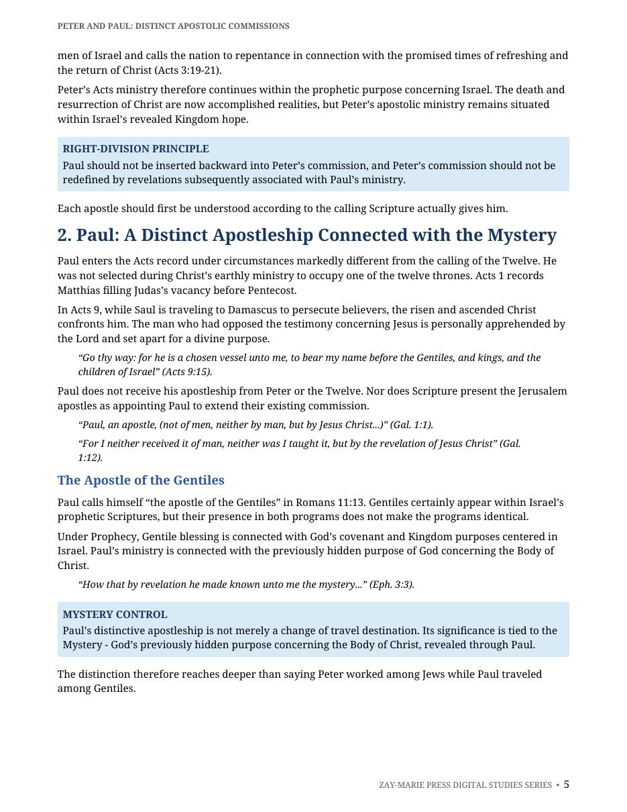
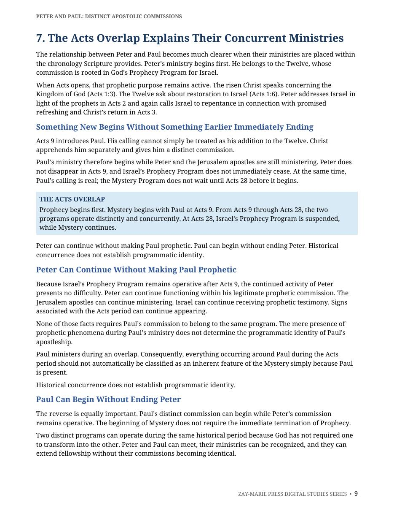
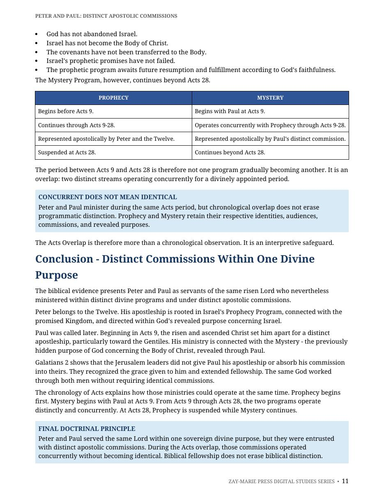

Peter and Paul: Distinct Apostolic Commissions
Same Lord, Distinct Apostleships During the Acts Overlap
A Biblical Study of Peter’s Kingdom Apostleship and Paul’s Mystery Apostleship During the Acts Overlap
Peter and Paul served the same risen Lord, yet Scripture presents them within distinct apostolic commissions. Peter belongs to the Twelve and Israel’s prophetic Kingdom purpose; Paul is called by the risen Christ at Acts 9 and entrusted with the Mystery revealed through him concerning the Body of Christ.
This study examines their callings, audiences, authority, and revealed purposes without placing the apostles in hostility. During Acts 9–28, their ministries operate distinctly and concurrently; at Acts 28, Prophecy is suspended while Mystery continues.
Distinct Commissions, Shared Faithfulness to Christ
Shared faith in Christ and common service to Him do not require identical commissions. Peter’s apostleship is rooted in the Twelve, Israel, and the promised Kingdom. Paul’s apostleship is not derived from Peter or the Twelve, but from the risen Lord’s direct calling and revelation.
Galatians 2 shows recognition and fellowship without absorption. The study therefore preserves distinction without rivalry, and unity in Christ without collapsing apostolic authority, audience, message, or purpose.
Trace the Distinctions Scripture Makes
Peter and the Twelve
Examine Peter’s place among the Twelve and the Kingdom purpose entrusted to Israel’s apostles.
Paul’s Distinct Calling
Follow Paul’s calling by the risen Christ at Acts 9 and the Mystery revealed through him concerning the Body of Christ.
Distinction Without Opposition
See why distinct commissions do not place Peter and Paul in rivalry or deny their shared faithfulness to the same Lord.
Galatians 2: Recognition Without Absorption
Study the recognition of their ministries without making either apostleship an extension of the other.
The Acts Overlap
Identify how Prophecy and Mystery operate distinctly and concurrently during Acts 9–28.
Acts 28 and the Suspension of Prophecy
Understand the Acts 28 boundary: Prophecy is suspended while Mystery continues.
Examine the Apostolic Texts for Yourself
Matthew 10:5–7
Jesus sends the Twelve within Israel’s Kingdom setting, with a stated audience and proclamation. This commission establishes the prophetic context of Peter’s apostleship.
Matthew 19:28
Christ assigns the Twelve a future role connected with Israel’s restoration and Kingdom administration. Their authority belongs within that promised prophetic purpose.
Acts 2:14–36
Peter addresses the men of Israel at Pentecost by tracing what the prophets spoke concerning Israel’s Messiah. His message remains anchored in Israel’s prophetic hope.
Acts 3:19–26
Peter calls Israel to repent in view of the promised times of refreshing and restoration. The appeal stands within the covenantal and prophetic promises made to Israel.
Acts 9:1–15
The risen Christ calls Saul apart from the Twelve and appoints him for a distinct ministry. His commission begins with the revelation given at Acts 9.
Acts 13:46–48
Paul explains his ministry in the setting of Israel’s response and his turn to the Gentiles. The passage helps trace the distinctive direction of his apostleship.
Romans 11:13
Paul explicitly identifies himself as the apostle of the Gentiles. This stated authority clarifies the audience and stewardship entrusted to him.
Galatians 1:1, 11–12
Paul’s apostleship is not received from men or through the Twelve, but through Jesus Christ. He also identifies his gospel as received by revelation.
Galatians 2:7–9
Paul and the Jerusalem leaders recognize distinct spheres of ministry without rivalry or absorption. Their fellowship preserves unity while maintaining distinct commissions.
Ephesians 3:1–9
Paul explains the Mystery entrusted to him concerning the Body of Christ. The passage identifies its distinct revealed purpose and stewardship through Paul.
Same Lord, Distinct Commissions
“Peter and Paul served the same risen Lord, yet Scripture presents them within distinct apostolic commissions.”
Galatians 2 presents recognition and fellowship without absorption. Peter’s Kingdom apostleship and Paul’s Mystery apostleship operate distinctly and concurrently during Acts 9–28. At Acts 28, Prophecy is suspended while Mystery continues.
Preview the Study Before You Purchase
Click any page to enlarge it for reading.
{kind=link}

What You Will Learn
Begin with the study’s governing distinctions and the questions it will answer from Scripture.
{kind=link}

Paul’s Distinct Apostleship
Examine Paul’s calling, authority, and revealed stewardship from the risen Lord.
{kind=link}

The Acts Overlap: Concurrent Ministries
See how Prophecy and Mystery operate distinctly and concurrently during Acts 9–28.
{kind=link}

Study Summary and Key Distinctions
Review the study’s governing conclusions and the distinctions that keep the apostolic commissions clear.
A Focused Study Built for
Understanding and Teaching
13-Page In-Depth Biblical Study
A focused examination of Peter’s Kingdom apostleship and Paul’s Mystery apostleship.
Six Core Teaching Sections
Follow the callings, audiences, authority, and revealed purposes that distinguish the two apostolic lines.
Apostolic Commission Comparison
Compare Peter and Paul without placing their ministries in rivalry or collapsing their distinct commissions.
Scripture-Tracing Study
Trace the principal passages from the Gospels, Acts, Galatians, Romans, and Ephesians.
Study Summary
Review the study’s principal conclusions concerning Peter, Paul, and the Acts Overlap.
Key Distinctions
Retain the distinctions between Kingdom and Mystery, Israel and the Body, and recognition and absorption.
Teaching Outline
Teach the apostolic distinctions in a clear, Scripture-grounded sequence.
Guided Further Study
Continue examining the Acts Overlap and the relationship of Israel’s prophetic purpose to the Mystery.
Peter and Paul: Distinct Apostolic Commissions
13-page digital PDF · For personal use